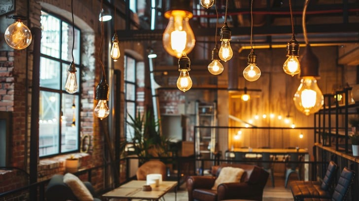

Добро пожаловать в "Кокон"
Это уютная кофейня, где каждый может укрыться от суеты, как в коконе. Качественный кофе, комфортные зоны для работы и отдыха, уникальные мероприятия. Перейдите в разделы для деталей!
Идея проекта
"Кокон" — это не просто кофейня, а пространство для релакса и продуктивности. Уникальная концепция: зоны как "коконы" с мягким освещением, акустикой и ароматерапией. Меню с specialty кофе, здоровыми закусками и сезонными напитками. Целевая аудитория: фрилансеры, студенты, семьи.
Команда
Собрана команда энтузиастов с опытом в HoReCa и бизнесе:
| Имя | Роль | Опыт |
|---|---|---|
| Алексей Иванов | CEO и Идеолог | 7 лет в ресторанном бизнесе |
| Мария Петрова | Шеф-бариста | Чемпион по латте-арту, 5 лет опыта |
| Дмитрий Сидоров | Дизайнер интерьера | Проектировал кафе в Москве |
| Елена Кузнецова | Маркетолог | Специалист по SMM для фуд-проектов |
Прототип
Прототип включает план помещения, меню и визуализацию. Разработан в Figma. Тестируется на фокус-группах.
- Зона 1: Бар с кофе-машинами.
- Зона 2: Уютные "коконы" для работы.
- Зона 3: Лаунж для отдыха.

Как привлечь инвестиции
Шаги по привлечению инвестиций:
- Подготовьте бизнес-план: идея, рынок, финансы.
- Участвуйте в акселераторах для фуд-стартапов.
- Ищите инвесторов через сети и мероприятия.
- Покажите прототип и метрики (посещаемость поп-апа).
- Используйте краудфандинг на Planeta.ru или Kickstarter.